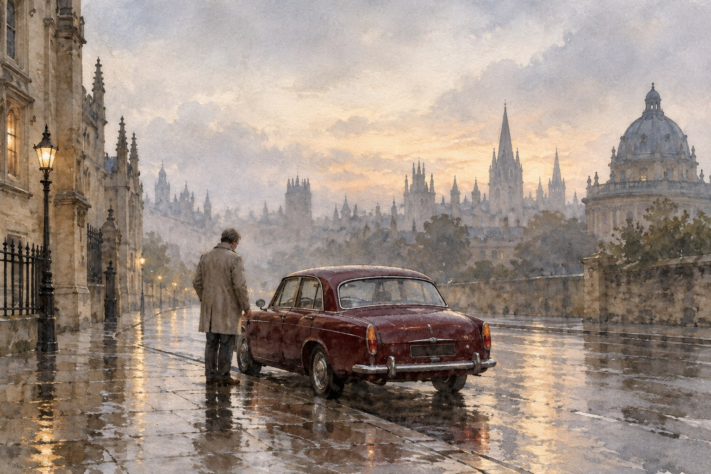

Наследство

Глава первая. Аэропорт
О, если б коснуться исчезнувшей руки
И услышать голос, что умолк!— Альфред Теннисон, «Разбейся, разбейся, разбейся» (1842)
Арестовывать людей в аэропорту я не люблю. Там слишком светло, слишком много народу, и все они куда-то летят, а ты никуда не летишь, ты на работе. Дети сидят на чемодах, отцы считают паспорта, и тут появляешься ты с удостоверением и портишь людям отпуск.
В тот день я никому отпуск не портил, человек у стойки регистрации летел один. Он стоял в очереди с одной сумкой и с билетом в один конец, и когда я назвал его по имени, он не побежал и не стал спорить. Посмотрел на меня, потом на табло с рейсами, где его рейс уже мигал зелёным, и протянул руки. Иногда люди так делают, когда устали бояться.
Дело было годовалое. Год назад в деревне в Котсволдсе убили медсестру Ивонн Харрисон, и дело застряло, как застревают дела, в которых слишком много подозреваемых и ни одного свидетеля. Потом пришло анонимное письмо, и всё закрутилось снова. Вел его я, потому что Морс был на больничном, и Морс сильно на меня за это дулся. Он дулся, а сам звонил мне домой по вечерам и спрашивал, что нового. Вэл брала трубку, говорила «Это тебя, не больной» и уходила на кухню. Последние дни он уже не звонил. Он лежал в больнице Джона Рэдклиффа, в Хедингтоне, с проводами на груди, и даже оттуда умудрился послать меня туда, куда надо. Это было на него похоже. Лежать при смерти и поправлять меня.
Я надел на человека наручники, и констебль отвёл его к машине. Девушка за стойкой спросила, что делать с его сумкой. Я сказал, что сумку я заберу, и подписал ей бумажку. И тут у меня в кармане зазвонил телефон.
Мобильный телефон мне выдали года два назад, и я до сих пор не привык. Когда он звонил, я сначала оглядывался, как будто звонит у кого-то другого. Морс мобильных телефонов не признавал совсем. Он говорил, что человек, которого можно найти в любую минуту, не стоит того, чтобы его искать.
— Льюис, — сказал Стрейндж.
И молчал. Стрейндж никогда в трубку не молчит. У него на любой случай есть слова, обычно лишние. Я стоял посреди зала с чужой сумкой в руке, мимо меня катили тележки, и я уже знал, что он скажет. Так бывает, когда звонят и молчат. Полицейский это знает лучше других, он сам столько раз стоял на чужом крыльце и молчал первые две секунды.
— Он умер, сэр?
— Давай без «сэра», — сказал Стрейндж. — Да. Двадцать минут назад. Я был с ним. Он всё время спрашивал, взял ли ты его. Я сказал, что взял. Я ведь не ошибся?
— Не ошиблись.
— Ну и слава богу. — Он помолчал ещё. — Льюис. Он попросил поблагодарить тебя. Это было последнее, что он сказал. «Поблагодарите за меня Льюиса». Вот. Я передал.
Я сказал спасибо. Стрейндж сказал, чтобы я оформил арестованного, как положено, а потом ехал в больницу, если хочу, или домой, если не хочу, и что никто меня не осудит ни за то, ни за другое. И положил трубку раньше, чем я успел спросить, как это было.
Я спрятал телефон и пошёл к выходу. У дверей меня догнала девушка со стойки, потому что я подписал не ту графу. Я расписался в той. Она посмотрела на меня и спросила, всё ли со мной в порядке. Я сказал, что да.
В машине арестованный сидел сзади, констебль рядом с ним, я вёл. По дороге до Оксфорда никто не сказал ни слова. И всю дорогу я думал не о Морсе, а о том, как сейчас ему расскажу. Как человек стоял в очереди с одной сумкой. Как протянул руки. Морс скажет, что так и знал, что всё было очевидно ещё в прошлом году и что я, как всегда, пришёл к финишу вторым. А потом спросит, заехал ли я по дороге в паб.
У кольцевой развязки перед Хедингтоном я понял, что рассказывать некому. До этого я знал, что он умер, а тут понял. Это разные вещи, кто терял, знает. Я пропустил съезд, и констебль сзади кашлянул. Пришлось делать лишний круг.
Арестованный смотрел на меня в зеркало. Потом сказал:
— Извините.
Я до сих пор не знаю, за что он извинялся. За Ивонн Харрисон, за лишний круг или за то, что у меня было такое лицо. Я не спросил. Я довёз его до участка, оформил, как положено, сдал сумку под расписку и поехал в больницу. Домой мне ещё было нельзя. Дома Вэл посмотрит на меня, и тогда это станет правдой.
Глава вторая. Рэдклифф
Порой мне кажется почти грехом
Облечь в слова мою печаль:
Слова, как и природа, наполовину открывают
И наполовину прячут душу.— Альфред Теннисон, «Памяти А. Г. Х.», V (1850)
В больнице Джона Рэдклиффа я бывал сотни раз и ни разу по своему делу. Там лежат потерпевшие, там лежат подозреваемые под охраной, там в подвале работают патологоанатомы. Я знаю, где там стоянка, где автомат с кофе, который можно пить, и где автомат с кофе, который пить нельзя. А в тот вечер я дважды заблудился на третьем этаже и спрашивал дорогу у санитара, как человек, который пришёл навестить тётю.
Стрейндж сидел в коридоре на пластмассовом стуле, который был ему мал. Он сидел, положив руки на колени, и смотрел на противопожарную дверь. Двадцать с лишним лет он был начальством Морса, и раньше, в молодости, когда я их ещё не знал, они, говорят, были что-то вроде друзей. Стрейндж об этом не рассказывал. Морс тем более.
Он поднял голову, увидел меня и встал, и стул заскрипел.
— Взял?
— Взял.
— Хорошо. — Он кивнул, как будто это и было самое главное, и может быть, для него так и было. — Он просил тебе передать… ну, я уже передал. Там доктор Хобсон. Она сама приехала, её никто не вызывал. Иди. Я посижу.
И сел обратно на стул, который был ему мал.
Доктор Хобсон стояла у окна в маленькой палате, в плаще, как будто зашла на минуту и не могла уйти. В те годы мы с ней виделись в основном над чужими телами, в лесу, в канаве, у реки, и она всегда была спокойная и немного насмешливая, особенно с Морсом, который не выносил вида покойников и всегда смотрел чуть в сторону. Она посмеивалась над ним, а он делал вид, что не слышит. Теперь она не смеялась.
— Ничего нельзя было сделать, сержант, — сказала она, не дожидаясь вопроса. — Я смотрела карту. Сердце и печень, и ни одного совета врача он не выполнил. Но это вы и сами знаете. Я говорю вам это, чтобы вы не думали, что могли что-то сделать. Вы будете думать. Но вы не могли.
Она вышла и закрыла за собой дверь.
В палате уже сняли провода и выключили монитор, и стало так тихо, как в больнице не бывает. Он лежал на спине, до груди накрытый простынёй, и был совсем маленький. Это первое, что я подумал, и мне до сих пор за эту мысль стыдно. Четырнадцать лет я смотрел на него снизу вверх, хотя ростом мы были почти одинаковые. А теперь посмотрел сверху вниз и увидел седого старика с небритыми щеками.
Очки лежали на тумбочке, сложенные. Рядом лежала газета, сложенная вчетверо, кроссвордом вверх. Я не стал смотреть, дорешён ли он. Я знал, что если не дорешён, то я этого не вынесу.
Что говорить, я не знал. В кино в таких случаях говорят длинно и хорошо, и всё расставляется по местам. А у меня в голове вертелось только то, что человек в аэропорту протянул руки, и это было совсем не то. Я взял его руку. Рука была ещё тёплая, и от этого стало хуже, чем если бы была холодная. Потом я наклонился и поцеловал его в лоб. За четырнадцать лет мы даже руку друг другу жали раза три, на свадьбах и после больших дел. Живой он бы меня за это убил.
— До свидания, сэр, — сказал я. Ничего лучше у меня не нашлось.
Когда я вышел, Стрейнджа в коридоре уже не было. На его стуле сидела Хобсон и пила кофе из того самого автомата, из которого пить нельзя. Она протянула мне второй стаканчик, и я взял.
— Он бы сказал, что это не кофе, — сказала она.
— Он бы сказал, что кофе вообще не напиток, — сказал я, и она чуть-чуть улыбнулась, и мы выпили эту гадость до дна.
Домой я приехал в одиннадцатом часу. В комнате сына играла музыка, которую Морс называл не музыкой, а шумом с претензиями. Вэл сидела на кухне с вязанием. Она посмотрела на меня, положила вязание и встала поставить чайник. Ни о чём не спросила. За двадцать лет она научилась читать меня, как я читаю протокол, сразу с конца.
Потом сказала, не оборачиваясь:
— Лин звонила. Я ей скажу завтра. И ему тоже, — она кивнула на потолок, сквозь который шёл шум с претензиями. — Садись, Робби.
Я сел. Чайник зашумел, потом щёлкнул. Вэл поставила передо мной кружку и положила мне руку на плечо, и тогда это стало правдой, как я и думал.
Глава третья. Никаких служб
Барабанщика Ходжа опускают на покой
Без гроба — как нашли.— Томас Харди, «Барабанщик Ходж» (1899)
Поверенного звали мистер Пёрси Харт, и контора у него была на Сент-Джайлс, на втором этаже, над турагентством. Он вёл дела Морса с тех пор, как у Морса появились дела, то есть, как он сам сказал, лет двадцать с лишним, и за эти годы Морс переписал завещание три раза. Последний раз в этом году, весной. Мистер Харт сказал это так, как говорят о погоде, и только потом я сообразил, что весной Морсу в первый раз сказали про сердце.
Нас было трое: мистер Харт, я и Адель Сесил. С Аделью Морс встречался последние годы, и это было так непохоже на все его прежние истории, что я долго думал, он сам не верит. Она не была ни подозреваемой, ни свидетельницей, ни чьей-то вдовой. Просто умная женщина, которая смеялась его шуткам и не давала ему спуску. С маститыми он всегда проигрывал. С простыми, как выяснилось, тоже, но по-другому.
Мистер Харт читал недолго. Почти все деньги, а вместе с продажей квартиры и машины их выходило больше, чем я думал, Морс оставлял на фонд, который должен был давать стипендии молодым музыкантам. Фонд не должен был носить его имени. Это было написано отдельно и подчёркнуто, как мне показалось, тем же движением, каким он подчёркивал у меня в рапортах апострофы не на месте. Какая-то сумма Адели. Какая-то сумма мне. И мне же, там так и было написано, «право взять из моих книг и пластинок то, что он захочет, если такое найдётся».
Адель тихо засмеялась. Я тоже. Мистер Харт подождал, пока мы закончим, и сказал, что остался ещё один пункт.
Тело Морс завещал больнице Рэдклиффа, для науки. И дальше, мистер Харт прочёл дословно: «Никаких служб, ни в церкви, ни вне церкви, никаких речей и никаких плит».
Вот тут я и разозлился. Я не сразу это понял, злость у меня вообще медленная, как старый дизель, ей надо прогреться. Но когда мы вышли на улицу, на Сент-Джайлс, под июльское солнце, она уже работала во всю.
У меня в жизни было много похорон. Я хоронил двоюродного брата, когда мне было восемнадцать, хоронил отца, хоронил сослуживцев и людей, чьи дела мы так и не раскрыли, и на каждых похоронах мне было плохо, и на каждых мне было где стоять. Вот что такое похороны, если вдуматься. Место, где стоять. Люди приходят, стоят рядом, потом идут в паб, и кто-нибудь обязательно скажет не то, и над этим потом будут смеяться лет десять. А ещё после похорон есть куда прийти. Со временем ты туда не ходишь, но знаешь, что можешь.
А Морс взял и всё это отменил. Как отменял всё, что считал лишним: завтраки, отпуска, отчёты и просьбы врачей. И никого не спросил.
— Он не хотел, чтобы над ним стояли, — сказала Адель. Она шла рядом и, видно, всё поняла по моему лицу. — Он сам мне говорил. Всю жизнь он стоял над чужими могилами, слушал чужие речи и думал, кто из стоящих убийца. Он не хотел, чтобы кто-нибудь стоял над ним и думал что угодно.
— Он не хотел, — сказал я. — А мы?
Адель остановилась и посмотрела на меня. У неё были сухие глаза и очень усталое лицо.
— А нас он, сержант, не спрашивал никогда. Вы это знаете лучше меня. Вы знали его четырнадцать лет, а я четыре года.
Она поцеловала меня в щёку и пошла к автобусной остановке, а я остался стоять на тротуаре, между турагентством и стоянкой велосипедов. Мимо шли туристы с картами и студенты, которым ещё не надо было уезжать на каникулы. Я стоял и думал, что вот теперь у меня есть деньги, которых хватит, чтобы Лин спокойно доучилась, и право на его пластинки, которые я не слушаю. А места, где стоять, у меня нет.
Так что я постоял там, на Сент-Джайлс. Потом велосипедист вежливо попросил меня подвинуться, потому что я стою на его месте, и я подвинулся.
Глава четвёртая. Поминки без покойника
Слёзы, праздные слёзы, я не знаю, о чём они,
Слёзы из глубины какого-то божественного отчаяния…— Альфред Теннисон, «Слёзы, праздные слёзы» (1847)
Раз нельзя было хоронить, решили пить. Решили не мы, а дежурный сержант с первого этажа, который прослужил в Сент-Олдейтс дольше всех нас и привык решать такие вещи без начальства. Он повесил на доске в столовой бумажку: «В пятницу в семь, «Орёл и дитя», за старшего инспектора Морса». И ниже, другой рукой, кто-то дописал: «Платит Льюис, как всегда». Я видел, как дежурный сержант хотел это зачеркнуть, и попросил его не трогать. Это была единственная строчка на всей доске, над которой он бы усмехнулся.
Потому что это правда. За четырнадцать лет Морс заплатил в пабе столько раз, что я их помню по датам. У него никогда не было с собой бумажника, или бумажник был, но в другом пиджаке, или в бумажнике были только крупные, а бармен на сдачу смотрит как на врага. Я сначала обижался, потом считал, потом перестал. Лет через пять Вэл сказала, что это у нас такая статья семейного бюджета, как свет и газ, и с тех пор я просто платил.
В пятницу в семь в задней комнате «Орла и дитя» было не протолкнуться. Пришли наши из уголовного розыска и наши в форме, пришли старики, которые давно вышли на пенсию и помнили Морса сержантом, пришла Хобсон с двумя своими лаборантами. Пришёл даже один человек, которого Морс когда-то посадил на семь лет, и сказал мне у стойки, что не в обиде, что семь было по делу и что никто никогда не разговаривал с ним так вежливо, как Морс на допросе. Я купил ему пинту.
И все рассказывали истории. Как Морс поправил грамматику в письме похитителя. Как он упал в обморок на вскрытии, а потом всем рассказывал, что поскользнулся. Как он два часа допрашивал не того человека и допросил до того, что тот сдал того. Половину этих историй я видел сам, и все они были не совсем так. Я не поправлял. На поминках не поправляют, на поминках человек становится таким, каким его хотят помнить, и это его последнее дело.
Когда все стали достаточно тёплыми, Стрейндж встал и постучал ключом о стакан. Я боялся речи. Стрейндж любит речи, и речи у него длинные, с цифрами раскрываемости. Но он посмотрел на нас, потом в свой стакан и сказал только:
— Вы знаете, что он про всех вас думал. И про меня тоже. За Морса. За полицейского, которого никто из нас терпеть не мог, кроме Льюиса.
И выпил. Все засмеялись и выпили, и кто-то сказал «за Морса», и я тоже выпил и вдруг понял, что сейчас заплачу, прямо тут, перед дежурным сержантом и семью летами тюрьмы. Помогла Хобсон. Она взяла меня под локоть и попросила показать ей, где тут сигаретный автомат, хотя не курит и прекрасно знает, что автомата тут нет. Мы постояли в коридоре у туалетов минуты три, пока у меня не прошло.
— Вы ему ничего не должны, сержант, — сказала она. — Даже слёз. Учитывая, сколько он вам должен за пиво.
Стрейндж поймал меня уже у выхода, в девятом часу. Он вывел меня на улицу, где ещё было светло и пахло нагретым асфальтом, и сказал, глядя не на меня, а через дорогу, на церковь:
— Льюис. Ты ждал вакансии инспектора. Вакансия есть. Бумаги я подпишу на следующей неделе, дальше как пойдёт. А пока будешь исполнять обязанности. Первое же дело, которое придёт, твоё.
Чья это вакансия, он не сказал, а я не спросил. Над живыми вакансий не бывает.
— Спасибо, сэр.
— Не за что. — Он помолчал. — Я сам ухожу, Льюис. В конце года. Никому пока не говори. Я ему говорил, что мы уйдём вместе, и он сказал, что скорее съест свой кроссворд. Ну вот. Он ушёл первым. Как всегда.
Он хлопнул меня по плечу и вернулся в паб. А я постоял на Сент-Джайлс, на той же самой улице, где стоял в понедельник, и подумал, что место для стояния я себе, кажется, нашёл. Не бог весть что, но лучше, чем ничего. Потом я вернулся и расплатился за всех. Как всегда.
Глава пятая. A40
Грубая Случайность заслоняет солнце и дождь…
— Томас Харди, «Удел» (1866)
Первое дело пришло в среду, и пришло оно не из уголовного розыска, а из дорожной полиции, в папке с отчётом о ДТП и с письмом, приколотым сверху скрепкой. Стрейндж положил её мне на стол сам, хотя мог бы прислать с секретарём.
— Это не убийство, — сказал он. — Скорее всего. Но отец написал коронеру, коронер позвонил мне, и мне нужен человек, который посмотрит и напишет, что посмотрел. Недели на две. Тебе как раз надо на чём-то привыкнуть сидеть одному.
Он сказал «сидеть одному» и посмотрел на второй стул у моего стола, на который никто не садился. Морс на него тоже не садился, он вызывал меня к себе. Но стул всё равно стоял тут для него, на случай, если он зайдёт и скажет «Ну что, Льюис?».
В ночь с субботы на воскресенье, в начале второго, на шоссе A40 за Эйншемом, на дороге к Уитни, старый «Ягуар» Mark 2 сошёл с дороги на длинном правом повороте и врезался в дуб. За рулём был Джейми Келлетт, двадцати двух лет, аспирант-физик, один в машине. Погиб на месте. Алкоголя в крови не нашли, наркотиков тоже. Дорожная полиция написала то, что пишет в таких случаях почти всегда: молодой водитель, старая быстрая машина, пустая дорога, несоответствие скорости дорожным условиям. Машина стояла теперь в полицейском гараже в Кидлингтоне и ждала лома.
Письмо написал отец. Ричард Келлетт, инженер, Шрусбери. Письмо было аккуратное, по пунктам, как пишут люди, которые всю жизнь составляли технические задания. Пункт первый: его сын ездил аккуратно, и водить его учил он сам. Пункт второй: в июне сын сказал ему по телефону, что у него «неприятности с одним человеком» и что тот ему угрожал. Пункт третий: машина была в отличном состоянии, куплена в апреле с полной реставрацией и свидетельством техосмотра, и отец сам её смотрел. Пункт четвёртый: следовательно, с машиной что-то сделали.
Пункт четвёртый был четвёртым только по номеру. Ради него и писалось письмо.
В четверг я поехал на место. Этот поворот я знал, как все повороты в округе. Двенадцать лет в фургонах в Ньюкасле и четырнадцать лет за рулём в Оксфорде, пока на соседнем сиденье думали думы, делают из человека карту графства. Поворот был не страшный. Длинный, плавный, с хорошим обзором. На таких поворотах разбиваются пьяные и те, кто заснул. Трезвые и неспящие на них не разбиваются.
У дуба лежали цветы в целлофане, уже пожухшие. На коре была светлая рана на высоте фар. Я прошёл вдоль обочины назад по ходу движения, и машины пролетали мимо меня так, что пиджак хлопал по спине. Тормозной след был. Дорожники его обмерили и нарисовали в отчёте: два чёрных ровных следа, коротких, а потом следы идут вбок, наискосок, резко, словно машину дёрнули за хвост. В отчёте это называлось «потеря контроля при торможении в повороте». Я постоял над следами дольше, чем надо, и не смог бы сказать, что в них не так. Кроме того, что на плавном повороте человек зачем-то затормозил, и машина сделала то, чего справные машины от одного торможения не делают.
Ричард Келлетт приехал ко мне в пятницу. Он был ниже меня, с короткой седой стрижкой, в пиджаке, который, видно, надевал только к начальству. Сел на край стула, на тот самый, второй, и положил на стол папку с бумагами на машину: договор купли-продажи, свидетельство о регистрации, пачку фотографий реставрации.
— Четырнадцать тысяч, — сказал он. — У него были накопления от бабушки и стипендия. Я ему говорил, купи нормальную машину. А он с десяти лет бредил этими «Ягуарами». Я поехал с ним в Абингдон, посмотрел. Машина была лучше новой. Я инженер, сержант. Я знаю, как выглядит справная машина.
— А человек, который ему угрожал?
Он покачал головой.
— Он не сказал кто. Сказал, что разберётся сам. Он всегда так говорил, с десяти лет. «Я сам». — Он замолчал и стал смотреть на фотографии реставрации. Там был кузов на козлах, без колёс, в сером грунте, и на последней фотографии та же машина, тёмно-зелёная, сияющая, и рядом парень в футболке, который смеётся и показывает на машину рукой, как показывают на невесту. — Сержант. Я не прошу вас найти убийцу. Я прошу вас найти, что случилось. Я не могу жить с «несоответствием скорости». Это не причина. Это формулировка.
Я сказал, что посмотрю. Он сказал спасибо, собрал фотографии, одну оставил мне, ту, где кузов на козлах, и ушёл. А я долго сидел и думал, что четырнадцать лет на такие слова отвечал не я. Я стоял рядом и записывал. А теперь на меня смотрел человек, у которого умер сын, и записывать было некому, кроме меня, и отвечать тоже.
Глава шестая. Абингдон
Знание приходит, а мудрость медлит.
— Альфред Теннисон, «Локсли-Холл» (1842)
В Абингдоне до восьмидесятого года делали машины MG, маленькие спортивные машины, на которых полмира влюблялось, а потом завод закрыли, и в городе остались люди, которые умели делать машины руками. Они разошлись по мастерским, и мастерских там с тех пор больше, чем надо такому городку. Это мне рассказал констебль из местного участка, которого я попросил об адресе. Он выслушал, куда мне надо, и сказал так, как говорят о местной достопримечательности: «А, Найджел».
«Холлоуэй Классикс» стоял на окраине, за промзоной, в бывшем складе с новыми стеклянными дверями. За стеклом стояли машины, как девушки на танцах: два MG, белый «Трайумф» с откидным верхом, голубой «Рилай» и в самой середине, под лампой, серебристый «Ягуар» Mark 2 с ценой на лобовом стекле, аккуратно выписанной пером. Цена была такая, что я перечитал её, думая, что там один ноль лишний. Нет, не лишний.
Найджел Холлоуэй вышел ко мне из стеклянной конторки в глубине зала. Лет пятидесяти, загорелый, в рубашке с закатанными рукавами и с часами, которые стоили моей годовой зарплаты. Руки у него были чистые, но на большом пальце старый шрам от ожога, и я подумал, что когда-то он сам варил. Он посмотрел на моё удостоверение и перестал улыбаться.
— Джейми, — сказал он. — Да. Я читал в «Оксфорд мэйл». Ужасно. Просто ужасно. Симпатичный был парень, знал марку лучше моих механиков. Приезжал три раза, пока решился. Вы знаете, сержант, в нашем деле есть такая штука: старые машины покупают либо старики, либо очень молодые. Старики ездят на них в воскресенье в паб. А молодые… — Он развёл руками. — Шестидесятые годы. Дисковые тормоза, конечно, но никаких антиблокировок, никаких подушек. Я всегда предупреждаю. Всегда.
Он показал мне бумаги на машину Джейми, те же самые, что у отца, только копии. Машина тысяча девятьсот шестьдесят четвёртого года, три литра семьсот кубиков, куплена им прошлой осенью «в тяжёлом состоянии» у вдовы в Глостершире и полностью восстановлена в его мастерской. Он показал мне и мастерскую. Он сам предложил. Двор за складом, навес, три подъёмника, на одном висел «Ягуар» без двигателя, и под ним стоял парень лет двадцати в комбинезоне и что-то там крутил. Когда мы вошли, он обернулся, увидел нас и очень старательно стал крутить дальше.
— Денни, — сказал Холлоуэй. — Мой сварщик. Лучший в графстве. Денни, это из полиции, про Джейми Келлетта.
Денни кивнул, не оборачиваясь. Ключ у него в руке сорвался, и он стал надевать его снова.
В углу двора, за навесом, под брезентом, лежали кузова. Не машины, а именно кузова, и не целые. Брезент с одного края сполз, и я увидел переднюю часть машины, отрезанную по салону ровно, как хлеб ножом.
— Доноры, — сказал Холлоуэй, заметив, куда я смотрю. — На запчасти. Запчастей на эти машины давно не делают, сержант, их снимают с таких вот бедняг. Каждая старая машина живёт за счёт двух-трёх умерших. Это не красиво, но такова жизнь.
Он сказал это хорошо, как говорят фразу, которую уже говорили не раз и остались довольны. Я записал её в книжку. У меня с кадетства привычка записывать фразы, которые слишком хорошо сказаны. Морс смеялся над этой привычкой и спрашивал, собираю ли я антологию. А потом иногда просил прочитать ему что-нибудь из неё.
В участок я вернулся к четырём. На столе меня ждало письмо от мистера Харта, поверенного. Вежливое, на плотной бумаге. Душеприказчики приступают к реализации имущества покойного. Поскольку я, как слышал мистер Харт, часто управлял автомобилем покойного, не соглашусь ли я перегнать его в следующую субботу в салон, который любезно согласился принять его на комиссию. Владелец салона сам позвонил в контору, прочитав некролог в «Оксфорд мэйл», и предложил самые выгодные условия.
Адрес салона был в Абингдоне.
Я прочёл письмо дважды, потом положил его рядом с фотографией кузова на козлах, которую оставил мне Ричард Келлетт. Совпадение, сказал бы я. В графстве один такой салон, у кого ещё им покупать и продавать старые «Ягуары». Совпадений не бывает, сказал бы Морс, бывают невнимательные сержанты. Я долго сидел над письмом и слушал, как они оба говорят у меня в голове, пока не понял, что один из них теперь тоже я.
Потом я написал мистеру Харту, что согласен.
Глава седьмая. Красивая версия
Старый порядок меняется, уступая место новому…
— Альфред Теннисон, «Смерть Артура» (1842)
У Джейми Келлетта была девушка, звали её Клэр, и до Джейми у Клэр был другой молодой человек. Это я узнал в понедельник в колледже, в комнате друга Джейми, тоже аспиранта, который сидел на кровати и всё время снимал и надевал очки. Летом в колледжах пусто, студенты разъехались, и в коридорах пахло краской, потому что летом в колледжах всегда что-нибудь красят.
Другого молодого человека звали Тоби Ормерод. Гребец, наследник чего-то в Хэмпшире, на июньском балу в колледже, которым тут кончается учебный год, он на глазах у всех схватил Джейми за лацкан и прижал к колонне. На балу все были в смокингах, и потому это запомнили. Сказал он ему, по словам друга в очках, что-то вроде «ты у меня доездишься на своей колымаге».
— Так и сказал? «Доездишься»?
— Так и сказал, — сказал друг и снова снял очки. — Но он был пьяный. И вообще Тоби такой. Он всем что-нибудь такое говорит.
И тут в голове у меня заговорил Морс.
Я не сумасшедший, голосов я не слышу. Но четырнадцать лет рядом с человеком, который думал вслух, делают своё дело, и я знал, что он бы сказал, так же точно, как знаю, что скажет Вэл, если я приду домой после полуночи. Он бы сказал: «Доездишься». И потёр бы руки. Он бы сказал: «Льюис, вот молодой человек, у которого отняли девушку. У него есть причина, у него есть свидетели угрозы, и угроза сформулирована, заметьте, с предлогом «на». Не «я тебя убью», а «доездишься на своей колымаге». Человек, который так говорит, уже думает о машине».
И дальше всё складывалось само. Отец Тоби Ормерода, как сразу выяснилось, держал конюшню и гараж на шесть машин, и Тоби с детства копался в моторах и на первом курсе даже ездил на какие-то гонки. Как подрезать тормозной шланг, чтобы он лопнул не сразу, а на третьем сильном торможении, он знал наверняка. Машина Джейми ночевала на улице у колледжа, не в гараже. Алиби на ту субботу у Тоби не было: он ночевал в оксфордской квартире один, как он сам сказал мне на следующий день, сидя в кресле нога на ногу и разглядывая мой галстук, как разглядывают чужую лошадь.
— Я сказал ему, чтобы он держался подальше от Клэр, сержант. И я бы сказал это снова. Но вам не кажется, что если бы я хотел его убить, я бы не объявлял об этом перед ста свидетелями?
И Морс у меня в голове сказал с удовольствием: «Именно это он и сказал бы, Льюис. Именно это».
Стрейнджу версия понравилась. Нельзя сказать, чтобы он обрадовался, но он слушал меня, кивая, и на слове «Хэмпшир» кивнул дважды, а на слове «смокинги» поморщился. Стрейндж сам из простых и не любит смокинги так же, как не любил их Морс, только Морс сам десять лет надевал смокинг на колледжские ужины и смотрел в нём лучше всех.
— Работай, — сказал Стрейндж. — Только аккуратно. У него отец обедает с лордом-наместником.
И вот что странно. Всё складывалось, а мне было неспокойно. Вечером я сидел дома над своими записями, и Вэл принесла мне чаю и ничего не сказала, и я понял, в чём дело, только к десяти часам.
Четырнадцать лет красивые версии строил Морс, а моей работой было их проверять. Ходить по дворам, звонить по телефонам, смотреть расписания автобусов. И половина его красивых версий рассыпалась на расписании автобусов. Он строил новую, ещё красивее, и я шёл проверять её. Иногда с четвёртой или с пятой попытки версия оказывалась верной, и тогда он говорил, что знал с самого начала.
А теперь красивую версию построил и понес начальству я, и проверять её было некому.
Я допил чай и посмотрел на фотографию, которую оставил мне Ричард Келлетт. Кузов на козлах, в сером грунте. И подумал, что если бы версию принёс мне Морс, я бы начал не с Тоби Ормерода, а с машины. Потому что Тоби Ормерод может сказать что угодно, а тормозной шланг либо подрезан, либо нет.
— Робби, — сказала Вэл из дверей. — У тебя лицо, как будто ты с кем-то споришь.
— Спорю, — сказал я. — И, кажется, в первый раз в жизни выигрываю. И мне это совсем не нравится.
Глава восьмая. «Ягуар»
Вот старый пол,
Истёртый, вогнутый, тонкий,
Вот прежняя дверь,
Куда входили мёртвые ноги.— Томас Харди, «Не видя себя» (1901)
Ключи мистер Харт передал мне в пятницу, в конверте, вместе с ключом от гаража. На кольце висел маленький кожаный брелок, чёрный, вытертый до серого. Я этот брелок держал в руках столько раз, что узнал бы его на ощупь в темноте.
Потому что за рулём этой машины я сидел сотни раз. Сам Морс водил её днём, по делам и по деревням, быстро и не очень хорошо. А вечером, после паба, он отдавал мне ключи, не глядя, тем же движением, каким отдавал мне дела, которые ему надоели, и садился слева. Я вёз его домой и слушал, как он думает вслух о деле, или о Вагнере, или о том, что пиво в пабе стало не то, что было в семидесятые. Потом он выходил, а я ставил машину в гараж и шёл домой пешком или вызывал такси. За такси платил тоже я.
А один, без него слева, я в ней не сидел ни разу.
В субботу утром я открыл гараж. Машина стояла так, как он её поставил в последний раз, немного наискосок, левым задним колесом на ветоши, потому что парковаться он так и не научился. В салоне пахло старой кожей, табаком, который он давно бросил, и ещё чем-то, чем пахло только здесь и чему я никогда не знал названия. Сиденье стояло под него, сдвинутое на два зубца вперёд. Я сел и не стал его трогать. Было тесновато, но я потерпел.
В кармане двери лежала «Таймс», сложенная вчетверо, с кроссвордом вверх. Дата была за три дня до больницы. Дорешён был весь, кроме одного слова в правом нижнем углу, восемь букв по вертикали. Я прочёл определение три раза и ничего не понял, как не понимал четырнадцать лет. Морс бы сказал, что это так и задумано, что кроссворд составляют для людей с классическим образованием, а не для сержантов из Ньюкасла. Я положил газету назад в карман двери. Пусть слово остаётся не отгаданным. Если бы я его отгадал, это было бы что-то вроде воровства.
В магнитоле стояла кассета. Я знал какая, ещё не включив. Вагнер, «Парсифаль», вступление к первому акту. Он ставил его, когда дело не шло. Я возил его под эту музыку так долго, что выучил её наизусть, сам того не желая, и даже знал, в каком месте он закрывает глаза. Я нажал кнопку.
И поехал в Абингдон под «Парсифаля», не скоро, как ездят за гробом, и на развязке у Хинкси-Хилла сзади мне долго сигналил мальчик на «Фиесте». Я не обиделся. Он же не знал. А Морс бы обиделся за нас обоих: за меня, потому что я плетусь, и за мальчика, потому что тот сигналит под Вагнера.
Холлоуэй вышел мне навстречу сам, раньше, чем я заглушил мотор. Улыбался он так, будто мы не виделись во вторник и будто я не приезжал к нему с удостоверением. Или будто именно потому, что приезжал.
— Сержант! Мистер Харт сказал, что приедете вы. Я рад. Правда рад. Кто же ещё. — Он положил ладонь на крышу, но на машину не посмотрел. — Вы привезли бумаги? Регистрационный документ, старую книжку, сервисную историю? Для такой машины история дороже железа. Бумаги, сержант, в нашем деле всё.
Бумаги лежали у мистера Харта в сейфе, и я так и сказал. Холлоуэй кивнул и сказал, что конечно, само собой, он напишет мистеру Харту сам. Он не расстроился. Вид у него был довольный. Но за те две минуты, что мы стояли у машины, он ни разу не обошёл её кругом, не заглянул под капот, не присел у порога, где у таких машин сидит ржавчина. А Ричард Келлетт, инженер, который в машинах разбирался куда хуже Холлоуэя, рассказывал мне, что сам лез под машину сына и осматривал пороги с фонариком.
Человек, который продаёт старые машины, смотрит на машину. А этот смотрел на меня и спрашивал про бумаги.
Из двора за складом доносилось шипение сварки, и в щели между воротами прыгал синий свет. Денни работал и в субботу. Я сказал, что хотел бы попрощаться с машиной, и Холлоуэй тактично отошёл. Я посидел за рулём ещё минуту, вынул кассету и положил в карман. Право взять из его пластинок то, что захочу, у меня было, а кассета есть та же пластинка, только меньше. Газету с недорешённым кроссвордом я оставил в кармане двери.
Домой я ехал на автобусе, как кадет, и всю дорогу думал не о Морсе. Я думал о том, почему человек, у которого на заднем дворе лежат кузова, разрезанные как хлеб, так ждёт не машину, а бумаги на неё. И что, если бы рядом сидел Морс, он бы уже знал ответ, а я бы его проверял. А так мне придётся сначала проверить, а потом уже знать. Дольше, зато своё.
Глава девятая. Шов
Скажут ли соседи:
«Он был из тех, кто замечал такие вещи»?— Томас Харди, «Потом» (1917)
Полицейский гараж в Кидлингтоне пахнет так же, как любой гараж на свете: маслом, резиной, холодным бетоном и чаем, который заваривают в жестяной кружке. Мне этот запах нравится с детства. Отец не был механиком, но на нашей улице в Ньюкасле была мастерская, и я провёл там полдетства, подавая ключи человеку по имени Алф и слушая, как он ругает правительство.
Эксперт по транспортным средствам, Сид Хаттон, был усатый и неторопливый, и по тому, как он вытирал руки ветошью, было видно, что вот он-то механик, а эксперт уже потом. Посередине гаража, на козлах, стоял тёмно-зелёный «Ягуар» Джейми Келлетта, и спереди он был смят по ветровое стекло. Сзади он был почти целый. Смотреть на него было тяжело, потому что у Тоби Ормерода не было колымаги, а у нас дома в гараже до вчерашнего дня стояла такая же, только бордовая.
— Тормоза? — спросил я.
— Тормоза в порядке, — сказал Сид. — Шланги целые, жидкость на месте, диски новые, колодки новые. Никто туда не лазил, сержант, если вы про это. Я посмотрел в первую же неделю, у меня в отчёте написано.
У него в отчёте действительно было написано. Тормозная система исправна. Рулевое управление повреждено в результате удара. Шины в приемлемом состоянии. Замечаний нет. Красивая версия с тормозным шлангом рассыпалась за первые две минуты, как половина его версий рассыпалась на расписании автобусов. Я даже не расстроился. Я её, видимо, и не любил.
— А почему её так дёрнуло?
Сид пожал плечами.
— Тормозил в повороте. Старая машина, задний привод. Бывает.
Бывает, согласился я. И попросил у него комбинезон.
Сид посмотрел на меня с интересом, как смотрят на собаку, которая вдруг заговорила, но комбинезон дал. Старый, синий, с чужой фамилией на спине. Детектив-сержанты в таких комбинезонах под машины не лазят. Они просят отчёт и читают его в кабинете. Морс в жизни не полез бы под машину, даже под свою. Он даже масло в ней не проверял. Масло проверял я.
Под машиной было чисто, насколько вообще бывает чисто под машиной. Днище было целиком покрыто свежей чёрной антикоррозийной мастикой, толсто, не пожалели. Это хорошо. Именно так и надо делать при реставрации, и Ричард Келлетт, когда лез сюда с фонариком, наверняка обрадовался: ни пятна ржавчины. Я прополз на спине на тележке от переднего моста до заднего и обратно, светя переносной лампой, и ничего не увидел. Потом прополз ещё раз, медленнее, и водил по днищу ладонью, а не лампой.
Ладонь нашла то, чего не нашёл свет. Чуть позади передних сидений, поперёк днища, от одного порога до другого, под мастикой шёл валик. Ровный, как по линейке. Сверху, в салоне, его накрывал ковёр, снизу мастика, и под лампой он сливался с тенями от ребер жёсткости. А пальцами читался как шрам.
Я взял у Сида отвёртку и сковырнул мастику в двух местах. Под мастикой был сварной шов. Сделанный аккуратно, красиво даже, длинными прихватками. И в левой трети шов был треснувший. Свежая трещина, светлая, с чистым металлом по краям, сантиметров на двадцать.
— Сид, — сказал я из-под машины. — Спуститесь сюда.
Сид спустился, с оханьем, на колено. Смотрел долго. Потом тихо и очень чётко выругался, и это была единственная фраза за весь день, которую я не стал записывать.
— Распил, — сказал он потом. — Они это называют «разрезал и сварил». Берут две битые машины. У одной разбит зад, у другой перед. Отрезают целое от одной и целое от другой и сваривают в одну. Красят, мажут мастикой, продают как целую машину, с документами одной из них. Ездит такая штука неплохо. До первого серьёзного торможения в повороте, когда весь вес уходит вперёд и вбок. Тогда кузов играет по шву, зад идёт своей дорогой, перёд своей. И машину дёргает за хвост. — Он помолчал. — Я его пропустил, сержант. Я искал тормоза. Мне сказали искать тормоза, я искал тормоза.
Я лежал на тележке под машиной, в которой погиб мальчик двадцати двух лет, и смотрел на шов. Никто не хотел его убить. Это я понял сразу, и от этого стало не легче, а хуже. Убийцу можно ненавидеть. А человек, который сварил этот шов, просто хотел четырнадцать тысяч фунтов и не думал, что будет потом. Таких людей ненавидеть труднее. Они похожи на всех.
— Сид, — сказал я. — Денни. У Холлоуэя сварщика зовут Денни. Лучший в графстве.
— Видно, — сказал Сид и провёл пальцем по целой части шва, почти с уважением. — Только такие вещи не варят в одиночку. Такие вещи варят по заказу.
На пиджаке у меня потом осталось чёрное пятно мастики, которое Вэл так и не смогла вывести. Я ей сказал, что и не надо.
Глава десятая. Документы
Так бережна она к породе,
Так небрежна к отдельной жизни.— Альфред Теннисон, «Памяти А. Г. Х.», LV (1850)
У каждой машины есть две жизни. Одна железная, вторая бумажная. Железная стоит у тебя в гараже и ржавеет. Бумажная лежит в Суонси, в агентстве, которое регистрирует все машины и всех водителей страны, и не ржавеет никогда. Пока они совпадают, машина жива. Когда железная умирает, а бумажная остаётся, получается душа без тела, и её можно продать. Это не моя философия, это Сида Хаттона. Он изложил её мне на следующее утро, пока мы с ним разделывали машину Джейми Келлетта на две.
Не буквально разделывали, а на бумаге. Сид снимал обшивку, отдирал уплотнители и заглядывал туда, куда маляр с краскопультом не дотянулся. Под капотом, в углах моторного отсека, под зелёной краской была белая. В багажнике, под ковриком, под той же зелёной, была тёмно-синяя. Одна машина была белая, другая синяя, а продали их вместе, одной зелёной машиной.
Потом Сид показал мне табличку с номером кузова. Это маленькая пластинка с выбитыми цифрами, которую на заводе крепят к машине, и по этим цифрам машина сверяется со своей бумажной жизнью. Цифры были те же, что в регистрационном документе у Ричарда Келлетта. А заклёпки были другие.
— Смотрите, — сказал Сид и посветил фонариком сбоку. — На заводе ставили другие. Это вытяжные, их в любом магазине купить можно, и поставить их можно за минуту специальными клещами. Табличку сняли с одной машины и поставили на другую. Душу пересадили, понимаете?
Я понимал.
Весь день я звонил. Детективная работа, если честно, это на девять десятых телефон, и Морс это прекрасно знал, потому что звонил всегда я. Вдова в Глостершире оказалась живой и весёлой старушкой с голосом, как у диктора радио. Да, машина покойного мужа, белая, она простояла в сарае двадцать лет. Да, приезжал очень приятный человек из Абингдона, загорелый. Заплатил триста фунтов наличными и очень просил не забыть отдать ему все бумаги. Сказал, что на детали. От машины, сержант, сказала старушка с удовольствием, там осталась одна ржавчина, задок можно было пальцем проткнуть. А перед был ещё ничего.
Значит, перед белый и бумаги оттуда же. А зад синий, и зад с чужой машины, у которой, видимо, был разбит перед.
Потом я звонил в Суонси, и там сначала не хотели меня слушать, потом слушали, но просили прислать запрос по форме, а потом девушка по имени Гвин, видимо, пожалела меня за ньюкаслский выговор и пообещала посмотреть, что можно. Гвин перезвонила в четверг, и то, что она сказала, я записал на трёх страницах.
За три года фирма «Холлоуэй Классикс» зарегистрировала на себя одиннадцать старых «Ягуаров» Mark 2 и продала все одиннадцать, каждый после «полной реставрации». И за те же три года та же фирма сообщила в Суонси, что сдала на лом ещё восемь «Ягуаров» той же модели, купленных после аварий. Бумажную жизнь у них закрыли, а железная никуда не делась. Она лежала под брезентом в углу двора в Абингдоне, нарезанная, как хлеб.
Вечером я сидел за кухонным столом и считал на обороте конверта. Вэл сидела напротив и считала вместе со мной, потому что считает она быстрее. Одиннадцать проданных машин, и на каждую нужно две старые. Двадцать две. А куплено девятнадцать.
— Три не сходятся, — сказала Вэл. — Либо три машины он всё-таки честно реставрировал, либо три половинки купил без бумаг.
— Или украл, — сказал я.
— Или украл, — согласилась Вэл. — Робби, а ему ведь нужны именно бумаги, да? Железо он найдёт где угодно, а бумаги берутся только от живых машин.
Я посмотрел на неё. И тут мне стало холодно, хотя на кухне было тепло, в июле у нас на кухне всегда жарко.
У Морса была живая машина с живыми бумагами и чистой историей с шестидесятого года, такая, какие на самом деле стоят тех денег, что пишут пером на лобовом стекле. Её можно продать кому-нибудь за границу, где никто не спросит британский регистрационный документ. А документ оставить себе. И табличку с номером кузова снять, и старые номерные знаки, а потом поставить всё это на очередной распиленный кузов, зелёный, белый или бордовый,, который потом кто-нибудь купит себе на сбережения от бабушки.
И по дорогам округа поедет машина с именем Морса и со швом поперёк днища.
— Робби, — сказала Вэл. — А бумаги Морса где?
— У Харта в сейфе, — сказал я. — Холлоуэй обещал сам ему написать.
И пошёл звонить мистеру Харту домой, в десять вечера, чего без крайней нужды не делают ни с поверенными, ни с покойниками. Мистер Харт взял трубку сразу и сказал, что как раз сегодня днём отправил все документы на машину в Абингдон заказным письмом. Мистер Холлоуэй очень просил, чтобы не задерживать, у него нашёлся покупатель из Германии.
Глава одиннадцатая. Квартира
Тёмный дом, у которого я снова стою
Здесь, на длинной неприглядной улице…— Альфред Теннисон, «Памяти А. Г. Х.», VII (1850)
Мистер Харт оказался человеком решительным, хотя по нему этого не скажешь. Выслушав меня по телефону, он помолчал и сказал, что как душеприказчик он вправе приостановить продажу в любой момент до подписания договора, что завтра же утром напишет в Абингдон, что машину надлежит вернуть наследственной массе вместе со всеми документами, и что об истинных причинах в письме не будет ни слова. Потом сказал:
— Сержант. Квартиру выставляют на продажу в понедельник. Если вы хотите воспользоваться своим правом… Ключ у вас, если не ошибаюсь.
Ключ у меня был. Не от мистера Харта, свой. Морс дал его мне лет десять назад, когда лёг в больницу в первый раз, с язвой, чтобы я поливал цветы. Цветов у него не было, я проверил. Был один кактус, и тот давно засох. Забрать ключ обратно он так и не попросил, а я так и не отдал. Он висел у меня на связке десять лет, между ключом от сейфа и ключом от сарая, и за десять лет я воспользовался им три раза, и все три раза, чтобы привезти ему чистую рубашку в больницу.
Поехал я в тот же вечер, без Вэл. Вэл предложила поехать со мной, а потом посмотрела на меня и сказала, что, пожалуй, не поедет.
Квартира была такая, какой я её помнил, и от этого не было легче. Бутылки были на своих местах, и полные и пустые, пустых больше. Книги были на своих местах, то есть везде: на полках, на подоконниках, стопкой у кресла, одна раскрытая, обложкой вверх, на подлокотнике. Я её не трогал. Пластинки стояли в два ряда вдоль всей стены, и на корешках были фамилии, из которых я знал половину и всех знал от него. За четырнадцать лет он так и не сделал из меня человека с музыкальным вкусом, но фамилии научил. А это уже немало, говорил он, если учесть, с чего я начинал.
И тишина. В этой квартире никогда не было тихо. Тут всегда играло что-нибудь, даже когда он спал в кресле. Я постоял в дверях гостиной и не знал, куда деть руки, как в церкви. Потом принёс из машины пустую коробку из-под телевизора и стал выбирать.
Выбирать оказалось труднее, чем я думал. Взять много было бы жадностью, а взять мало было бы обидно для него. В конце концов в коробке оказались: Хаусман, «Шропширский парень», старое издание, всё в карандашных пометках на полях, и на одной странице все пометки стёрты резинкой, кроме одной строчки. Одна пластинка, Реквием Форе, потому что это единственное из его музыки, что Вэл назвала красивым. Словарь для кроссвордов с оторванной обложкой. И белая кружка с отбитой ручкой, из которой он пил чай по утрам. Точно такая же была у сержанта Хеппла в Ньюкасле, и кадетом я мыл её последней и ставил вверх дном на чистое полотенце. У старших, видно, всегда кружки с отбитыми ручками, а новую они не покупают из принципа. Кружка к книгам и пластинкам не относилась, и никакого права на неё у меня не было. Я её всё равно взял. Пусть мистер Харт арестует меня.
На кухне пахло нежилым. В холодильнике стояло скисшее молоко и две бутылки пива, и больше ничего, и я подумал, что именно так и выглядит его диета, о которой столько говорили врачи. Молоко я вылил. Пиво оставил. На полке над плитой стояли специи, которых он, по-моему, ни разу не открывал, и среди них пустая банка из-под мёда, без этикетки, чисто вымытая, с крышкой. В ней ничего не было. Я взял её в руки, повертел и поставил на место. Зачем человек, который не держал в доме хлеба, держал пустую банку из-под мёда, я не знал. Морс многого мне не рассказывал, и про мёд тоже.
Я решил выпить чаю, прежде чем уходить. В квартире покойника так делать, наверное, не положено, но я на этой кухне заваривал чай столько раз, что не понимал, почему сегодня должно быть иначе. Чайник был на месте. Чай был в жестянке. А чайных ложек не было ни в сушилке, ни в раковине.
Я выдвинул ящик кухонного стола.
Глава двенадцатая. Ящик кухонного стола
Неужели это тебя я слышу?
— Томас Харди, «Голос» (1912)
Ложек в ящике не было. Там были пробки, которые собирают люди, думающие, что когда-нибудь из них что-нибудь сделают, и бечёвка, и старые предохранители, и под всем этим, в глубине, небольшая стопка бумаг. Я бы её не трогал. Но предохранители застряли в задней стенке, и я потянул ящик сильнее, и он выехал целиком, и стопка съехала набок.
Сверху лежал бланк заявления на какой-то экзамен, пожелтевший, не заполненный, старого образца, таких уже лет двадцать не печатают. Под ним билет в оперу, не по-английски, и я разобрал только слово «Байройт» и дату, и билет был целый, неоторванный. Он туда не поехал. Под билетом карточка, на которой было написано одно слово, чужим почерком, твёрдым и старомодным: «Почти». И инициалы, Р. Б., и больше ничего, ни даты, ни адреса. Я не знал, что это значит, и понял, что теперь уже не узнаю. Это был ящик с вещами, которые человек не может выбросить и не хочет перечитывать. У меня тоже есть такой. Это коробка с книгами, которую я так и не распаковал.
А в самом низу лежал конверт.
Адрес на конверте был написан крупным старательным почерком человека, которого в школе учили писать без помарок. Я смотрел на него долго, прежде чем понял, чей это почерк. Так бывает с фотографиями: смотришь на мальчика в странной кепке и думаешь, кто бы это мог быть.
«Детектив-сержанту … Участок Касл-Гейт, Оксфорд». Фамилии на конверте не было, вместо неё стояло многоточие. Я вспомнил, почему. Вспомнил сразу и целиком, как будто открылась дверь в комнату, которую я давно закрыл. Июль семьдесят второго, кухня дома в Ньюкасле, тетрадь, из которой я вырвал лист. Я хотел написать фамилию и не мог её вспомнить. Он назвался по телефону три раза, и все три раза я не записал, потому что записывал другое, а фамилия была короткая и ни на что не похожая. И я написал на конверте многоточие и думал, что на участке разберутся. В участке не может быть много детектив-сержантов, которые вели дело Эндрю Льюиса.
Разобрались.
Я сел на кухонный стул, на тот самый, с которого он по утрам ел хлеб с мёдом, когда в доме были хлеб и мёд, и достал из конверта своё письмо. Лист был сложен вчетверо, и сгибы стёрлись, как стираются не от времени, а от того, что лист разворачивали и складывали обратно. Не раз и не два.
Письмо было короткое. Эндрю похоронили дома, рядом с отцом, пришло много народу. Спасибо за всё, что вы сделали. Открытку я сохранил, как вы сказали. Если что-нибудь узнаете, напишите, пожалуйста. Р. Льюис, кадет Нортумберлендской полиции.
И всё. Девять строчек. Я над ними сидел весь вечер и дважды переписывал набело, потому что наделал ошибок.
И тут я услышал голос. Не морсовский в голове, как в колледже с Тоби Ормеродом, а другой, давний, с треском, как слышишь людей по радио. «Мистер Льюис. У вас есть открытка? Сохраните её. Главное — запомнить». Мистер Льюис. Восемнадцатилетнему кадету из Ньюкасла никто в жизни не говорил «мистер», а этот говорил, и поэтому я запомнил голос, а не фамилию.
И ещё один голос, тот же самый, через четырнадцать лет, из-за крашеной двери на Сент-Олдейтс: «Войдите». Я тогда ещё подумал, что где-то его слышал. Подумал и забыл, потому что надо было искать ключи от служебной машины и ехать в Саммертаун к старушке с молоком. А потом было четырнадцать лет того же голоса каждый день, и голос стал просто голосом Морса и перестал быть чем-то ещё.
И ещё одно. В тот самый первый день, когда я уже взялся за ручку двери, он сказал: «Льюис». Я сказал: «Сэр?». Он посмотрел на меня поверх очков и сказал: «Ничего. Закройте дверь». Я четырнадцать лет не вспоминал этого «ничего». А теперь вспомнил, и оказалось, что помнил все четырнадцать лет, только не знал, что помню.
Он знал. Все четырнадцать лет. В тот день у него на столе лежало моё личное дело с моей кадетской фотографией, а в ящике его кухонного стола лежало моё письмо, и он сложил одно с другим раньше, чем я постучал. Он всегда складывал раньше меня. И ни разу ничего не сказал. Ни в пабе, ни в машине по дороге домой, ни в больнице, где можно было сказать уже что угодно.
Я думал, что разозлюсь. У меня всё для этого было, и злость у меня медленная, но надёжная. А не разозлился. Я сидел на его кухне с письмом в руках и пытался представить, что бы он мне сказал, если бы сказал. «Льюис, те, кто убил вашего брата, так и не найдены, и их больше никто не ищет, и я в том числе». И что бы я с этим делал четырнадцать лет? Работал бы с ним и думал бы об этом каждый раз, когда он думает вслух о чужих убийствах. Он молчал не от меня. Он молчал за меня. Это была единственная работа, которую он никогда на меня не сваливал.
Вот тут я заплакал. Не в больнице, не в пабе и не на Сент-Джайлс, а на его кухне, с письмом восемнадцатилетнего дурака в руках, который не запомнил фамилию. Плакал недолго, минуты три, как в коридоре у туалетов с Хобсон, только теперь никто не спрашивал про сигаретный автомат.
Потом я сложил письмо по старым сгибам и положил во внутренний карман. Оно было моё, на него не нужно было никакого права. Билет в Байройт, бланк и карточку с одним словом я положил обратно в ящик, в том же порядке, и задвинул его. Это были его вещи, и про них он тоже молчал. Не мне было их открывать.
Чай я так и не выпил. Выключил свет, взял коробку с Хаусманом, Форе и кружкой и запер дверь своим ключом, в последний раз. И ключ оставил себе. Пусть мистер Харт меня и за это арестует.
Глава тринадцатая. Сварщик
Только человек боронит комья
Медленным, молчаливым шагом…— Томас Харди, «Во время «Раскола народов»» (1915)
Стрейндж выслушал меня в четверг в девять утра, не перебивая. Отчёт Сида Хаттона на двух страницах с фотографиями шва. Показания старушки из Глостершира, записанные местным констеблем, которого она накормила печеньем. Список из Суонси, распечатанный на трёх листах с дырочками по краям, и конверт с арифметикой Вэл. Про арифметику я не сказал, чья она. Морс тоже никогда не говорил, чьи на самом деле его самые удачные мысли.
Когда я закончил, Стрейндж долго смотрел на фотографию трещины.
— А слава богу, — сказал он наконец. — Я про Ормерода. Я уже видел, как мне звонит лорд-наместник. — Он поднял глаза. — Ты начал с машины. Не с парня, не с девушки, а с машины.
— Да, сэр.
— Он бы начал с девушки.
— Да, сэр.
— И в конце концов тоже пришёл бы к машине, — сказал Стрейндж. — Недели через две, через один скандал и через твою беготню. — Он подписал прошение о ордере на обыск, не дочитав. — Иди к судье. И возьми людей. И Сида возьми, если он не задастся.
Сид не задался. Сид поехал в Абингдон в своём синем комбинезоне и в машине молчал, а пальцами всё время стучал по колену, как стучат перед ответственной игрой.
Холлоуэй встретил нас в зале среди своих девушек на танцах. Ордер он прочёл внимательно, дважды, и вернул мне с улыбкой человека, которому нечего скрывать, и попросил разрешения позвонить своему адвокату. Я разрешил. Потом он стоял у своего серебристого «Ягуара» под лампой, сложив руки, и смотрел, как Сид ложится под этот «Ягуар» на начищенный пол своего салона. И вот тут улыбка у него стала немного тоньше.
Бордовый «Ягуар» Морса стоял в дальнем сарае за мастерской, под чехлом, с номерами, целый. Рядом на верстаке лежала дрель с тонким сверлом, клещи для заклёпок и коробочка вытяжных заклёпок, тех самых, что в любом магазине. А в конторе в сейфе, когда его открыли, нашлись бумаги на машину Морса в заказном конверте мистера Харта, и письмо мистера Харта о том, что продажа приостановлена, и телефакс из Штутгарта с подтверждением, что трейлер придёт в субботу.
Денни нашёлся не в мастерской. Денни сидел за сараем на перевёрнутом ящике и курил, и когда мы с констеблем зашли за угол, не встал и не побежал. Двадцать лет, комбинезон, ожоги на руках, старые и свежие. Он посмотрел на меня и сказал так, будто мы продолжаем разговор:
— Я ему говорил.
И рассказал. Сидя на ящике, не вставая, пока констебль писал, а я стоял. Как пришёл к Холлоуэю после колледжа, в шестнадцать, как Холлоуэй научил его варить так, как не учат в колледже. Как два года назад понял, что именно варит. Как Холлоуэй сказал, что так делают все, что половина старых машин в стране собрана из других старых машин и что хороший шов крепче заводского металла. Как в марте он варил зелёную, и на левом лонжероне металл сзади оказался гнилой под старой краской, и он сказал Холлоуэю, что надо ставить усилительную пластину, а ещё лучше искать другой зад. А Холлоуэй сказал, что покупатель приедет в пятницу и что пластину под мастикой всё равно никто не увидит, что с ней, что без неё.
— И он приехал в пятницу, — сказал Денни. — Джейми. Он спрашивал меня, какой присадкой я варил пороги. Только он про них и спросил. Все спрашивают про краску. Я ему сказал. Про пороги. А про лонжерон не сказал. Он мне ещё руку пожал.
Он посмотрел на свою руку с сигаретой и больше ничего не сказал.
Холлоуэя мы задержали в половине первого. На допросе в Сент-Олдейтс, при адвокате и под магнитофон, как теперь положено, он на все вопросы отвечал одно и то же: «Без комментариев». Я задавал вопросы час, по списку, спокойно, потому что знал, что ответы мне уже не нужны. Ответы были у Сида в отчёте, у Гвин в Суонси и у Денни на ящике. Один раз он всё-таки не выдержал. Это было, когда я спросил, почему он так спешил с бумагами на машину покойного старшего инспектора Морса.
— Это была просто старая машина, сержант, — сказал он устало. — Старая машина мёртвого человека. Какая ему разница.
Адвокат положил ему руку на рукав, и он замолчал. А я подумал, что вот тут он ошибается сильнее, чем с лонжероном. Мёртвому человеку, может быть, и всё равно. А если он оставил после себя сержанта, то сержанту не всё равно.
Какую статью ему предъявят за Джейми Келлетта, решать было не мне, а королевской прокуратуре, и прокуратура потом долго думала. За мошенничество с одиннадцатью машинами думать не пришлось. А мне осталось самое трудное: съездить в Шрусбери и рассказать Ричарду Келлетту, что никто не хотел убить его сына. И что от этого, насколько я знаю людей, ему не станет легче.
Глава четырнадцатая. Покупатель
Люди приходят и уходят,
А я теку вовек.— Альфред Теннисон, «Ручей» (1855)
В Шрусбери я ездил во вторник. Ричард Келлетт жил в доме с подстриженной лужайкой, и в прихожей у него висела фотография мальчика лет десяти рядом с чужим серым «Ягуаром» на какой-то выставке. Мальчик держался за крыло так, будто машина может уехать без него. Я рассказал всё, по порядку, как докладывают инженеру: шов, трещина, лонжерон, две краски под зелёной. Он слушал и кивал, и дважды задал вопрос про толщину металла, и я на оба ответил по отчёту Сида.
— Никто не хотел, — сказал он, когда я закончил.
— Никто не хотел.
Он покивал головой ещё немного, потом встал, подошёл к окну и постоял спиной ко мне.
— Я сам лазил под неё, — сказал он стеклу. — С фонариком. Я видел свежую мастику и обрадовался. Я сказал ему: смотри, как сделано, на совесть. Я провёл по ней ладонью, сержант. Как вы.
Провёл, но не там. Этого я ему не сказал. Я сказал, что трещину не нашёл даже полицейский эксперт, с первого раза, и что такие швы делают именно для того, чтобы их не находили отцы с фонариками. Это была правда, и он это знал. Но думаю, он всё равно будет думать, что провёл ладонью не там. Как я думал, что мог что-то сделать в больнице, хотя Хобсон мне сказала, что не мог.
На прощание он пожал мне руку и сказал спасибо, и сказал, что придёт на суд. Причина теперь у него была. Не формулировка, а причина. Насколько это лучше, я не знаю.
«Ягуар» Морса простоял две недели в полицейском гараже в Кидлингтоне как вещественное доказательство, и Сид Хаттон лично следил, чтобы никто не ставил на него кружки. Потом его вернули наследственной массе, и мистер Харт спросил меня, и на этот раз в его голосе было что-то вроде вины, не знаю ли я кого-нибудь, кто мог бы… Он не договорил. Я знал.
В клубе владельцев «Ягуаров» отделение по Оксфордширу вёл пенсионер, бывший сельский врач, доктор Эдвард Фенуик, семидесяти двух лет, и у него был собственный Mark 2, синий, купленный новым в шестьдесят третьем, и правнучка, которая студентка и которую он собирался научить водить правильной машине. Он приехал в Кидлингтон на своём синем, обошёл бордовый три раза кругом, сел на корточки у каждого порога и так, скрипя коленями, просидел дольше, чем Холлоуэй простоял у этой машины всего. Потом он попросил разрешения сесть за руль, посидел с руками на баранке и спросил, кто сдвинул сиденье на два зубца вперёд.
— Хозяин, — сказал я.
— Тогда не буду трогать, — сказал доктор Фенуик. — Я того же роста.
Он заплатил не столько, сколько пишут пером на лобовых стёклах в Абингдоне, а сколько стоит старая живая машина с живыми бумагами, и ещё тысячу сверху, когда мистер Харт сказал ему, куда пойдут деньги. Сказал, что на молодых музыкантов не жалко, из них всё равно вырастают врачи, если повезёт.
И тут мистер Харт сказал вещь, которую, видимо, давно носил в себе. У фонда, сказал он, до сих пор нет названия. Имени покойного он носить не должен, это подчёркнуто. А без названия нельзя ни зарегистрировать, ни принимать заявки, и попечители спорят третью неделю.
Имя Морса я узнал лет через десять после того, как мы начали работать вместе, и он мне сам его так и не сказал, я узнал его не от него. И всегда думал, что это имя не похоже на имя. Это слово, какие пишут на флагах и на кораблях.
— А если назвать его просто словом, — сказал я. — Не фамилией. Словом, которое все поймут про музыку и про тех, кто старается. А кто знал, тот поймёт про него.
Мистер Харт посмотрел на меня поверх очков, и в первый раз за всё знакомство улыбнулся. Видимо, он тоже знал.
— Это не нарушает буквы завещания, — сказал он. — Насчёт духа не уверен. Но с духом у него и при жизни были сложные отношения.
Доктор Фенуик уехал на бордовом, не скоро, а следом за ним его правнучка, которая приехала с ним, повезла синий, осторожно, как возят стекло. Я стоял во дворе гаража рядом с Сидом и смотрел, как бордовая крыша уходит за поворот. У поворота он затормозил, плавно, как надо, и машину никуда не дёрнуло.
— Поедет ещё, — сказал Сид. — Лет двадцать поедет. У неё железо и бумаги совпадают.
А газета с недорешённым кроссвордом так и уехала в кармане двери. Я вспомнил про неё, когда машина уже скрылась, и подумал, что может быть, доктор Фенуик его дорешит. Врачи часто решают кроссворды. Это было бы честно: у человека с классическим образованием и сиденьем под тот же рост на это права больше, чем у меня.
Глава пятнадцатая. Инспектор
Вызванивайте прочь старое, вызванивайте новое…
— Альфред Теннисон, «Памяти А. Г. Х.», CVI (1850)
Приказ о присвоении мне звания детектив-инспектора повесили на доску в столовой в сентябре, рядом с прошлогодним объявлением о продаже билетов на рождественский вечер. В том же месте, где в июле висела бумажка про «Орла и дитя». Дежурный сержант так и не снял её, просто приколол приказ сверху, и снизу из-под приказа ещё видно было: «…латит Льюис, как всегда». Я постоял и посмотрел на обе бумажки сразу и подумал, что вторая вернее.
Кабинет мне дали на третьем этаже, в конце коридора, с окном на крыши. Не его. Его кабинет достался старшему инспектору, которого перевели из Ридинга, и я не стал туда заходить смотреть, что там теперь стоит на подоконнике. Так было правильно. Если бы мне дали его кабинет, я бы сидел там за его столом и всё время ждал, что сейчас он зайдёт и скажет, чтобы я встал.
В новом кабинете было два стула. Один мой и один для сержанта, которого мне пока не дали. Я поставил на стол белую кружку с отбитой ручкой, а Хаусмана не поставил. Хаусман остался дома, на тумбочке у кровати, и по вечерам я его читал, по странице, по две, и понимал немного, а пометки на полях не понимал совсем. Вэл сказала, что это ничего, что пометки на полях и не пишут, чтобы их понимали другие.
В первый же день ко мне заглянул молодой констебль с папкой и сказал: «Это вам, сэр». И ушёл. А я несколько секунд сидел и смотрел на дверь, как смотрят на человека, который поздоровался на улице с кем-то за твоей спиной. Двадцать восемь лет я говорил «сэр» другим. А теперь мне сказали «сэр», и ничего не случилось, констебль ушёл, папка лежала, и в папке была кража велосипедов из двора колледжа Святого Иоанна. Двадцать три велосипеда за лето. Я посмеялся вслух, и в пустом кабинете это прозвучало странно. Мой шурин Кевин в восемьдесят шестом сказал мне, что в Оксфорде мне придётся искать велосипеды. Надо будет позвонить ему и сказать, что он был прав, только с опозданием в четырнадцать лет.
Стрейндж объявил об отставке в октябре. Прощальный вечер был в том же «Орле и дитя», и в тот раз платил сам Стрейндж, потому что так положено, и сказал мне у стойки, что теперь его совесть чиста и за Морса тоже. Речь он сказал длинную, с цифрами раскрываемости, и я слушал её с удовольствием, как слушают старую песню, которую больше не услышишь.
В тот же вечер я в первый раз увидел того, кто придёт на его место. За начальством полиции округа в том году прислали женщину, старшего суперинтенданта Инносент, и она зашла в паб на полчаса, в тёмном костюме, выпила полбокала белого вина и пожала руки всем, до кого дотянулась. Мне она пожала руку коротко и крепко и сказала, что читала моё дело о распиленных «Ягуарах» и что ей нравятся люди, которые начинают с фактов. И что она надеется, что у фактов в этом здании теперь будет побольше сторонников, чем было, по её сведениям, раньше.
Я сказал «Да, мэм», и она пошла дальше вдоль стойки. А я посмотрел ей вслед и подумал, что за четырнадцать лет ни разу не слышал, чтобы меня хвалили за то, что я начинаю с фактов. За это меня в основном терпели. И подумал, что Морс от этой женщины на второй же неделе запросился бы в отставку сам, и кто знает, может быть, прожил бы подольше.
Дома я рассказал об этом Вэл. Сын сидел с нами на кухне, что бывало редко, и ел тосты, и слушал, а потом сказал, что один парень из их колледжа уехал в Австралию и пишет, что там другая жизнь. И посмотрел на нас. Вэл посмотрела на меня. Я сказал, что Австралия никуда не денется и что сначала надо доучиться. Он сказал, что так и думал, что я это скажу, и ушёл наверх, к своему шуму с претензиями.
— Он уедет, — сказала Вэл, когда наверху хлопнула дверь.
— Уедет, — согласился я. — Мы же уехали.
Вэл положила руку мне на руку и сказала, что мы уехали вместе, и это совсем другое дело. И что когда дети разъедутся, мы с ней останемся вдвоём в этой кухне и наконец сможем спокойно стареть, и что она этого давно ждёт. У нас впереди лет тридцать, сказала она, не меньше.
Я поверил. Мне тогда не с чего было не верить.
Глава шестнадцатая. Почти
Я часть всего, что встретил на пути.
— Альфред Теннисон, «Улисс» (1842)
Коробку с книгами я распаковал в ноябре, в воскресенье, через четырнадцать лет после того, как она приехала с нами с Тайна. В Кидлингтоне она стояла в кладовке, потом переехала с нами сюда и стояла в гараже, сперва за велосипедом сына, потом за его мопедом. Вэл дважды за эти годы предлагала её распаковать, и оба раза я говорил, что сам. А в то воскресенье принёс её на кухню, поставил на стол и разрезал скотч, пожелтевший и лопнувший от первого же прикосновения, как будто он тоже давно ждал.
В коробке оказалось не так уж много. Учебник уголовного права, в котором половина законов отменена даже не по два, а по три раза. Кадетская памятка. Две книжки про судостроение на Тайне, которые мне когда-то подарили, и я их так и не прочёл. И школьная тетрадь с лошадкой на обложке, в которой из всех страниц исписаны полторы, моим почерком, с датами и минутами. Из той коробки за все годы тетрадь доставали один-единственный раз, и доставала её Вэл.
Лин, которая приехала на выходные из своего училища, взяла тетрадь, посмотрела на лошадку и сказала, что это её тетрадь, она помнит эту лошадку, и что она её потом искала целую неделю. И спросила, что там написано. Я сказал, что там записано, как было. Вэл на другом конце стола подняла глаза от газеты и снова опустила. Лин посмотрела на мать, потом на меня и не стала больше спрашивать. Она у нас выросла в семье полицейского и знает, когда не спрашивают.
Книги я поставил на полку в гостиной, рядом с Хаусманом. Получилась странная компания: учебник уголовного права, корабли и стихи про шропширских парней, которые умирают молодыми. Но все они были мои, и стояли ровно.
А потом, когда все разошлись спать, я достал из внутреннего кармана пиджака своё письмо, а из бумажника открытку с площадью Рэдклифф. Открытка стёрлась на сгибах до белизны ещё в восемьдесятые, а теперь на ней остался только купол и часть неба. На обороте был почерк Эндрю. Я положил их рядом на кухонный стол, письмо и открытку, и посмотрел на них вместе.
И понял, что они пара. Одна бумага пришла из Оксфорда на Тайн, другая с Тайна в Оксфорд, и последние четырнадцать лет обе лежали у разных людей в одном городе, в трёх милях друг от друга, и один из этих людей знал про обе, а другой только про свою. Скажи мне кто-нибудь в семьдесят втором году, что человек на другом конце провода будет моей жизнью на четырнадцать лет, я бы записал фамилию. Я всё записываю. Эту не записал.
А он записал. Он всё сложил и ничего не сказал, и положил моё письмо в тот же ящик, где лежали его собственные несказанные вещи. Билет в оперу, куда он не поехал. Бланк, который он не заполнил. Карточка с одним словом от человека с инициалами Р. Б., которого я никогда не узнаю. Вся его жизнь в одном ящике кухонного стола, и я там тоже был. Не в кабинете, не в рапортах и не на правом сиденье «Ягуара». В ящике.
«Почти», написал кто-то Р. Б. И я думал в тот вечер над своим письмом, что такое почти. Почти раскрыл дело Эндрю. Почти стал суперинтендантом. Почти доехал до Байройта. Почти сказал мне в тот первый день, когда сказал «Льюис», а потом «Ничего». Почти дорешил последний кроссворд. Мне казалось, что маленькое это слово про него целиком. А потом я подумал, что про меня оно тоже. Почти записал фамилию. Почти узнал голос за дверью. Почти научился за четырнадцать лет слушать Вагнера. Почти поверил в красивую версию. Вот тут, с красивой версией, почти было хорошим словом.
Письмо и открытку я положил в Хаусмана, на ту страницу, где все пометки стёрты резинкой, кроме одной строчки. Строчку я тогда прочёл и до конца не понял. Надо будет спросить кого-нибудь с классическим образованием, подумал я. Потом вспомнил, что спрашивать больше некого, и поставил книгу на полку. Пусть стоит. Кто-нибудь когда-нибудь объяснит.
Вэл спустилась в халате, посмотрела на полку, на пустую коробку на полу и на меня. Спросила, как мне вообще там, первым. Не в смысле дел, а так.
Я подумал и сказал честно. Что четырнадцать лет я думал, что второй номер это тот, кто ведёт машину, платит за пиво и звонит в Суонси. А оказалось, что второй номер это тот, за кого молчат. И что вторым быть проще. Проще платить за пиво, чем молчать за другого человека четырнадцать лет.
Вэл поставила чайник. И сказала, что придётся научиться.
Я сказал, что научусь. Времени у меня, казалось, было сколько угодно.